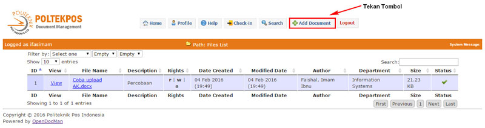
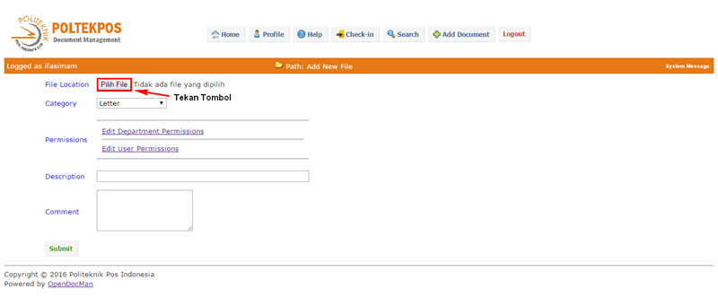
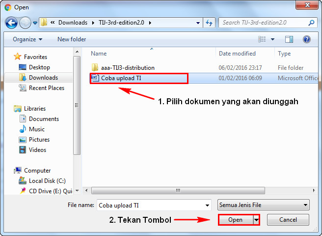
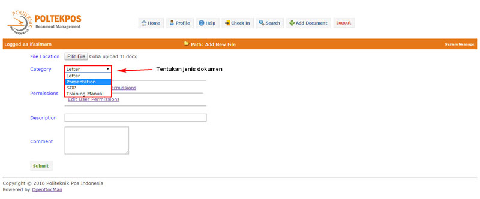
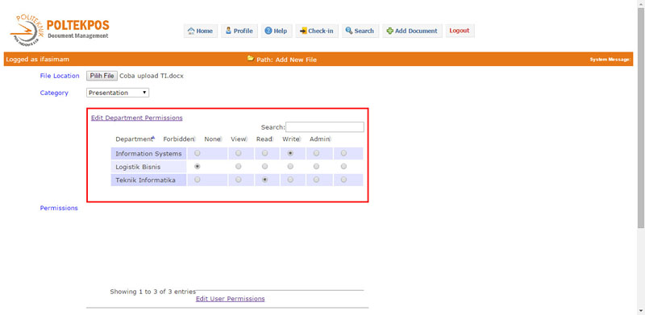
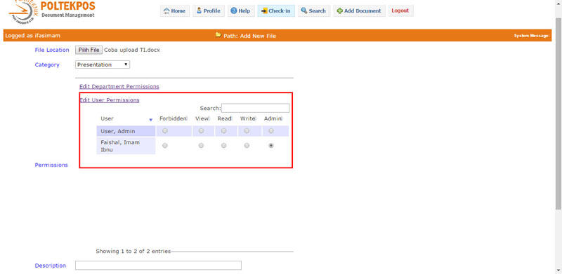
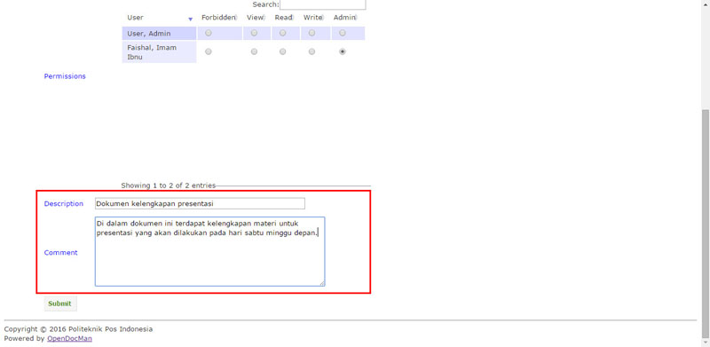
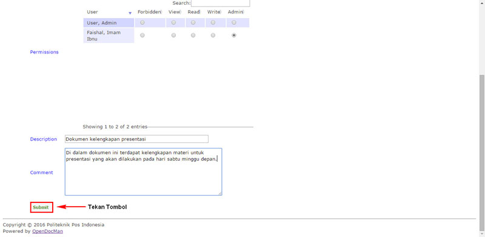
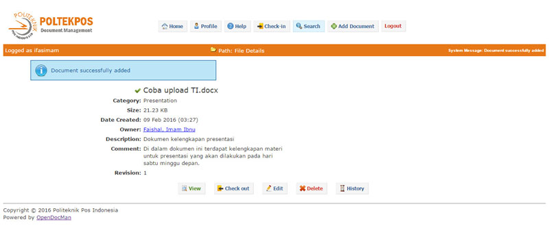

OpenDocMan - Guide to use
Add File - File Location
Pada bagian ini anda dapat melakukan pencarian dokumen yang akan ditambahkan ke dalam repositori
dokumen pada komputer anda dengan menekan tombol "Pilih File..." sehingga akan muncul jendela baru.
Pada jendela baru yang terbuka, pilihlah sebuah dokumen yang akan anda tambahkan lalu tekan tombol "Open" sehingga akan muncul nama dokumen pada text box yang tersedia di samping tombol "Pilih File..." .
Setelah itu, lanjutkan pengisian form pada baris selanjutnya untuk kelengkapan data yang akan ditambahkan ke dalam repositori dokumen.
Add File - Category
Pada bagian ini anda dapat menentukan kategori dari dokumen yang akan ditambahkan ke dalam repositori.
Pastikan kategori yang anda pilih sesuai dengan jenis dokumen yang akan anda tambahkan untuk
memudahkan proses pencarian data nantinya jika dokumen sudah ditambahkan ke dalam repositori.
Add File - Authority
Pada bagian ini anda dapat menentukan pembatasan hak akses dokumen kepada departemen maupun secara spesifik kepada user.
Pengunggah dokumen dapat menentukan jenis akses yang dapat diberikan meliputi
forbidden,
view,
read,
modify,
admin.
Forbidden : Tidak diperbolehkan mengakses dokumen
View : Diperbolehkan melihat dokumen tetapi tidak dapat mengunduh dokumen
Modify : Diperbolehkan melihat dokumen dan dapat mengunduh dokumen
Admin : Diperbolehkan untuk melihat, mengunduh dan mengubah versi dokumen
Add File - Description
Pada bagian ini anda dapat menambahkan deskripsi dokumen yang akan anda unggah.
Deskripsi dokumen akan ditampilkan pada tampilan listing file sehingga deskripsi digunakan sebagai identitas
dokumen untuk mempermudah proses pencarian dokumen.
Jika dirasa deskripsi dari dokumen yang akan anda unggah cukup banyak maka anda dianjurkan untuk menggunakan kolom pada
sisi Comment dengan ruang yang lebih besar
untuk menjelaskan deskripsi dokumen anda.
Add File - Comment
Pada bagian ini anda dapat menambahkan deskripsi dari dokumen dengan ruang yang lebih besar.
Rights - Admin
Pada level ini pengguna dapat melakukan keseluruhan administrasi dokumen meliputi unggah, unduh, menghapus dan lain sebagainnya.
Rights - Modify
Pada level ini pengguna dapat melakukan unggah revisi dari dokumen tetapi tidak dapat menghapusnya.
Rights - Read
Pada level ini pengguna hanya dapat mengunduh dokumen.
Rights - View
Pada level ini pengguna hanya dapat melihat list dokumen tanpa melakukan proses unggah, unduh dan lain sebagainnya.
Rights - Forbidden
Pada level ini pengguna tidak diberikan ijin penuh untuk mengakses dokumen.
Add File - Example
Mari berasumsi anda akan melakukan pengaturan permission sebagai berikut kepada dokumen yang akan anda unggah:
- Hanya anda yang dapat melakukan permission administrasi pada dokumen
- Hanya departemen anda yang dapat melakukan permission modify pada dokumen
- Hanya departemen Teknik Informatika yang dapat melakukan permission Read pada dokumen
- Hanya departemen Logistik Bisnis yang dapat melakukan permission View pada dokumen
- Selain ketentuan permission di atas, akan masuk ke dalam daftar permission Forbidden
Setelah anda memahami ketentuan permission di atas, selanjutnya anda dapat melihat contoh proses pengunggahan dokumen
di bawah ini:
-
Langkah pertama, tekan tombol "Add Document" pada menu header. Anda dapat melihat contoh pada gambar

-
Setelah muncul halaman baru, tekan tombol "Pilih File" untuk membuka jendela baru pada sistem.
Anda dapat melihat contoh pada gambar

-
Setelah jendela baru muncul, pilih dokumen yang akan diunggah lalu tekan tombol "Open".
Anda dapat melihat contoh pada gambar

-
Langkah selanjutnya, pilih jenis dokumen yang akan anda tambahkan. Anda dapat melihat contoh pada gambar

-
Langkah selanjutnya tentukan pengaturan permission dokumen kepada departemen. Anda dapat mengikuti rule pada asumsi yang
sudah ditentukan sebelumnya atau anda dapat menentukan permission sendiri lihat ketentuan permission

-
Langkah selanjutnya tentukan pengaturan permission dokumen kepada user. Anda dapat mengikuti rule pada asumsi yang
sudah ditentukan sebelumnya atau anda dapat menentukan permission sendiri lihat ketentuan permission

-
Langkah selanjutnya, anda dapat menambahkan deskripsi serta komentar sebagai penyerta kelengkapan dokumen. Deskripisi dan komentar
dapat meliputi instruksi penggunaan dokumen maupun ringkasan isi dokumen tersebut

-
Jika dirasa semua data beserta kelengkapan yang akan diunggah sudah benar, maka anda dapat menekan tombol "Submit" untuk mengakhiri
proses pengunggahan dokumen

-
Terlihat notifikasi sistem bahwa dokumen sudah diunggah ke dalam repositori

-
Proses unggah dokumen selesai sampai disini.
Catatan: pastikan anda melakukan pengaturan permission yang tepat pada dokumen yang ditambahkan, untuk mencegah pengaksesan
dokumen oleh pengguna atau departemen
yang tidak mempunyai kepentingan atas dokumen tersebut.
Prepared by Imam Ibnu Faishal (1143090)